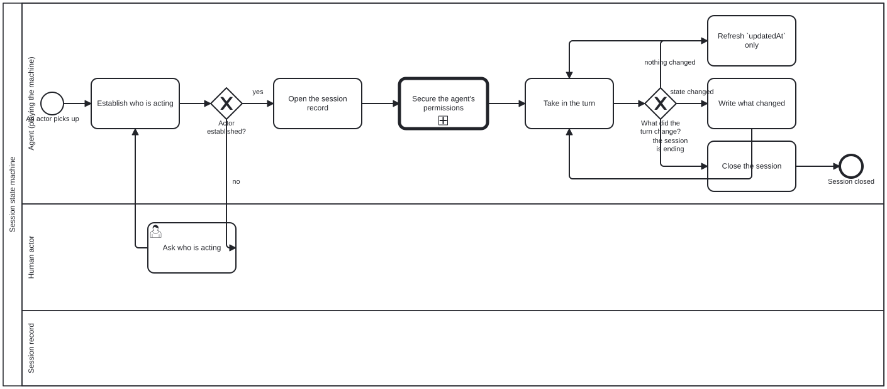

Generated from
cat-harness/skills/process/workflow/session-state-machine.md— do not edit here.
Playing a state machine
An agent could also play a (non-deterministic) state machine as a tool. Managing state (kinda) during human/agentic discussion. — the owner, 2026-09-20
The diagram is processes/process/session-state-machine.bpmn. It keeps a
session’s context current across a discussion: establish who is acting, open
the record, and on each turn decide whether anything changed.
The non-determinism is in the TRANSITIONS, not the shape
This is the whole design, and getting it backwards makes the thing unbuildable.
A machine whose shape were non-deterministic could not be drawn here. The interpreter supports nine BPMN element types and throws on the rest, on purpose: skipping an unrecognised element yields a process that runs, reports progress, and is silently not the process on the diagram.
So the shape is strict and enumerable. What varies is which enabled branch the agent takes, and what it writes.
That needed no change to the engine. An exclusive gateway carrying
<cat-harness.processes:decision> is computed and workflow_complete refuses a
hand-supplied outcome; one without it already meant the caller supplies the
answer. The mechanism for a non-deterministic transition was there before
anybody asked for one.
What did need adding: saying that a judgement is deliberate
A gateway with no decision table was two different things wearing one appearance:
- somebody’s call, which no table can make, and
- a table nobody has written yet.
Indistinguishable from the outside — the gap cat-harness.processes:no-skill closed for
activities, one element type along. So <cat-harness.processes:judgement reason="…"/>, with
the same three rules: the reason is required and a declaration without one
does not load; it is refused on anything but an exclusive gateway; and it is
refused alongside cat-harness.processes:decision, because a gateway claiming both that a
table decides it and that a person does leaves a reader unable to tell which
the author meant.
Why this matters more than the activity case. A step with no skill is a
documentation gap. A gateway with no table is a point where an LLM decides the
branch — and how many of those there are, and which, is exactly the question
the deterministic-to-agentic spectrum is about (bean q0tc). A mechanism
that cannot enumerate its own judgement points cannot answer it.
check:workflow-refs now prints the three-way split. Issue #200 §6 classified
this repository’s decision points in prose, in an issue, where nothing reads
it; the count is now printed from the models. Ask the checker, not this
page — and note that an undeclared gateway is a backlog entry rather than a
defect: every one that predates the marker lands there, and a gate that failed
on an un-annotated corpus is a gate somebody turns off.
What the machine must never do
It claims nothing. No cat-harness.processes:bean appears anywhere in the diagram. The
process RECORDS that an actor claimed a bean; it does not claim one. A machine
that claimed on the actor’s behalf would make the claim’s owner unrecoverable
— and a claim announces rather than reserves precisely so a reader can tell
who announced it.
It closes nothing but itself. A_CloseSession records that the actor
stopped. It does not resolve beans or complete instances: those outlive the
session by design, and a machine that tidied them away on exit would be
asserting that work finished because somebody went away.
It is advisory, not strict. An agent keeping its own session record must never be refused. A missing update is a gap in a record, not an unauthorised write — and the base content processes are the ones that gate.
The two judgement points, and why each is safe to be one
Gateway_ActorKnown — only the discussion says who is acting, and it
rarely says so in a field. A table would need a name to read; this branch is
the reading.
Gateway_TurnEffect — whether a turn changed the session’s state is a
reading of intent. “I might look at X later” and “start X” differ by
nothing a table can key on.
Both are safe to be judgement for the same reason, and it is worth stating
because it will not hold everywhere: getting one wrong is recoverable. The
next turn corrects it, and nothing downstream has been authorised in the
meantime. Contrast the five steps the base processes mark relaxable="false"
— the editor seeing the findings, the decision, the write, the release
authorisation — where a wrong branch authorises something that cannot be
un-authorised.
That contrast is the shape of the answer q0tc is looking for, and this
skill deliberately does not pre-empt it: recoverability is one candidate
criterion for where judgement is admissible, tested on two gateways. Whether
it is the right one, and what else belongs beside it, is research rather than
assertion.
Writing state a non-deterministic machine produced
The record’s shape cannot be assumed from the writer’s care, because the
writer is an LLM playing a part. parseSessionContext() parses at the
boundary.
The general rule, of which this is the first case: where a machine may be PLAYED rather than executed, the schema is the contract and the parse is where it is enforced. Not the writer’s discipline, not a review, not a convention — a parse, at the point the value crosses in.
See also
session-context— the record this machine keeps, and whyactoris its required field.workflow-state— which store answers which question, and why an instance and a bean must be one answer.bpmn-processes— authoring an activity, strict vs advisory, and DMN-backed gateways.process-state— the five detectors for being out of process. A session whose view has drifted from its instances is one of them.
Processes that run this skill
This skill has its own process: Session state machine.
